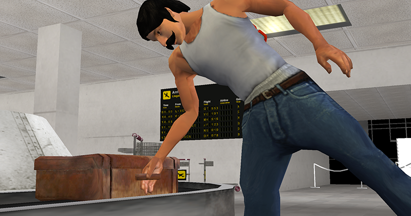
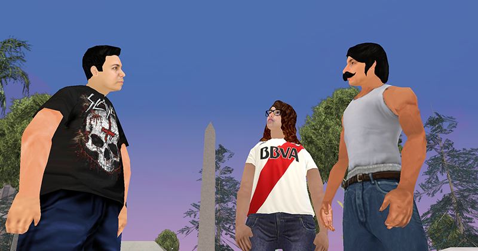
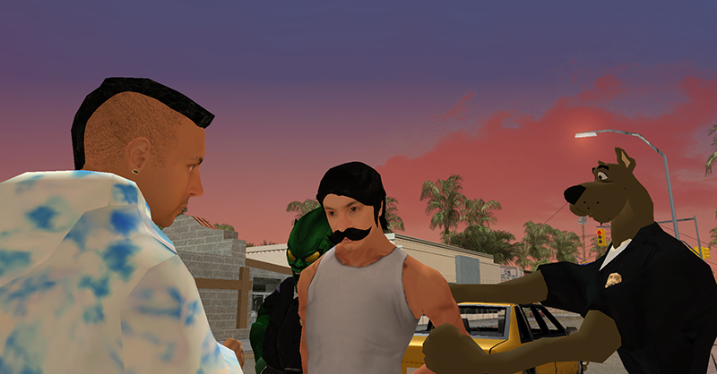
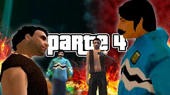
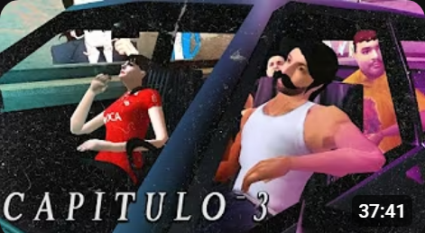
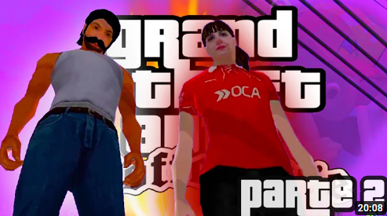
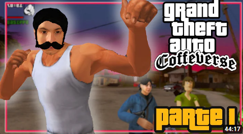
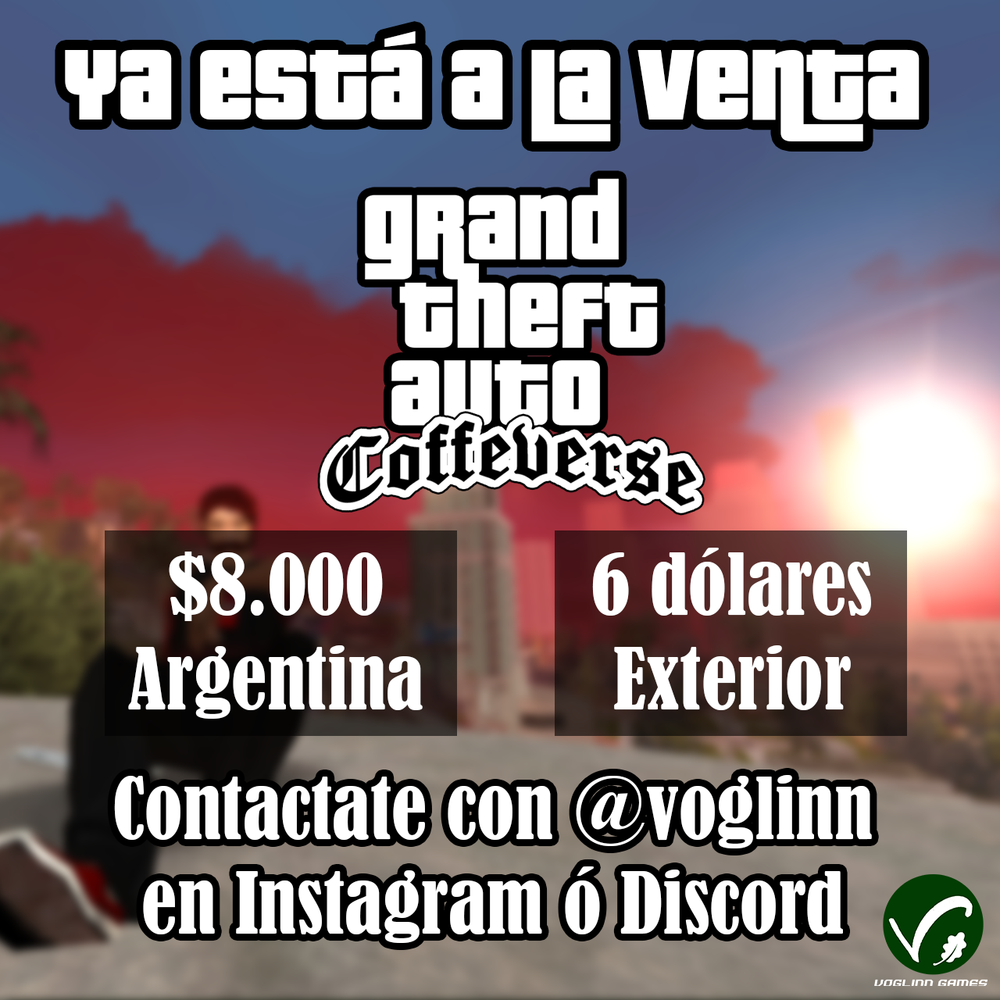

¿Qué es el GTA CoffeTV?

El GTA CoffeTV es un mod del GTA San Andreas hecho para el youtuber y streamer CoffeTV
y para su comunidad. Se trata de una modificación del juego en el que Coffe es el personaje principal,
los personajes secundarios y terciarios son personas que frecuentan las
transmisiones de Twitch y la historia del juego está adaptada a la temática del canal.
Este mod fue hecho casi totalmente por Voglinn, que es uno de los usuarios que frecuentan las transmisiones de Twitch de CoffeTV.
Él hizo los modelos 3D de los personajes, los cambios en las texturas del mapa, el reemplazo de las voces de los personajes,
la escritura de los diálogos de las misiones, entre otros. Casi todas las voces para los personajes fueron interpretadas por
las mismas personas que frecuentan los streams de Twitch, y también fueron utilizados muchos dibujos y canciones de artistas
del stream.
El mod fue lanzado a mediados de enero del 2024. El streamer Iván de la Nave (CoffeTV) transmitió en vivo jugando a este juego
hasta la misión número 30, que fue hasta donde se adaptó el juego. Actualmente está la intención de continuar la historia y
transmitirla en un futuro.
El juego está a la venta para quien quiera jugarlo en su propio ordenador. Para comprarlo, hay que contactarse con Voglinn
a través de su cuenta de Instagram.
Argumento del juego

La historia del juego comienza con Coffe recibiendo una llamada de
Baicito, quien le da la
noticia de que Candelixx ha sido asesinada. Hasta ese entonces, Coffe había estado viviendo en
Enano City hacía unos
dos años, queriendo alejarse de su comunidad, de la cual ya se sentía demasiado saturado.

Ahora, Coffe vuelve a Coffe Town
y se encuentra con el Nes Junior, La Tana, Baicito y Rita, pero no es muy bien recibido. Baicito, su amigo más
cercano, lo resiente por haberlos abandonado a todos dos años atrás.
La Tana le recrimina lo mismo, aunque de forma
más sarcástica. El Nes Junior es el único que no parece enojado con Coffe. Por otro lado, su comunidad ahora está
dividida y enemistada entre sí:
los mexicanos,
los LATAM y la banda de Ingleses-Brazucas
no paran de matarse entre
sí en las calles, en una eterna puja por dominar los barrios de la ciudad. Y por si esto fuera poco,
Coscu, el
eterno enemigo de Coffe, está entongado con la policía y sus amigos el Duende Verde
y Scooby Doo, y maneja los hilos
de todo lo que sucede en Coffe Town.
Durante el desarrollo del juego, Coffe TV va a tener que probar que su lealtad sigue estando
con su comunidad, y ayudarlos a que las otras bandas no los exterminen por completo. Va a enfrentarse con nuevos y viejos enemigos,
ayudar a sus amigos y, lo más importante de todo, descubrir la verdad sobre la muerte de Candelixx.
Novedades
GTA CoffeTV - Capítulo 4

Ya está el capítulo 4 en YouTube! Coffe ayuda a La Tana a robarle a Guillermo Francella,
se reencuentra con John Frustrante que sale de la cárcel y lo ayuda a saldar cuentas con Kramer, y después vuelve con
La Tana para sacar provecho de una información que les da Coscu. También vemos la intro con el tema nuevo que hizo
Bloq Mayus.
Ver video
GTA CoffeTV - Capítulo 3

Ya está el capítulo 3 en YouTube! Coffe sale a comer con su banda y se cagan a tiros con los Ingleses, visita a Benny
el dominicano, se compra ropa y se tatúa. Después, se vuelve a cagar a tiros con los Ingleses, salva al toro y a Artisteando de un
enfrentamiento, y participa en una competencia de coches en donde conoce a Edduerdo, el novio de Rita.
Ver video
GTA CoffeTV - Capítulo 2

Ya está el capítulo 2 en YouTube! Coffe recorre la ciudad de Coffe Town mirando a los personajes y los lugares,
va con la Tana y Voglinn a visitar a Wazka Burbuja y a Franklin, y luego mata a Tortafrita y algunos ingleses, recorre el bar y juega
a los jueguitos que hay ahí.
Ver video
GTA CoffeTV - Capítulo 1

Ya está subido el primer capítulo del GTA CoffeTV en el canal secundario de Coffe!
En este primer video, vemos la intro del juego y las primeras escenas, y conocemos a muchos de los personajes.
Coffe juega sus primeras misiones con los personajes de Baicito, la Tana y el Nes.
Ver video
Ya está a la venta el GTA CoffeTV!

Ya está a la venta el GTA CoffeTV! Por la suma de $8000 pesos argentinos, o 6 dólares para
quienes vivan en el exterior del país, podés descargarte el juego y jugarlo en tu computadora! Para comprarlo, hacé click
en el siguiente link y enviale un mensaje por Instagram a Voglinn diciéndole que querés comprar el juego.
Instagram de Voglinn